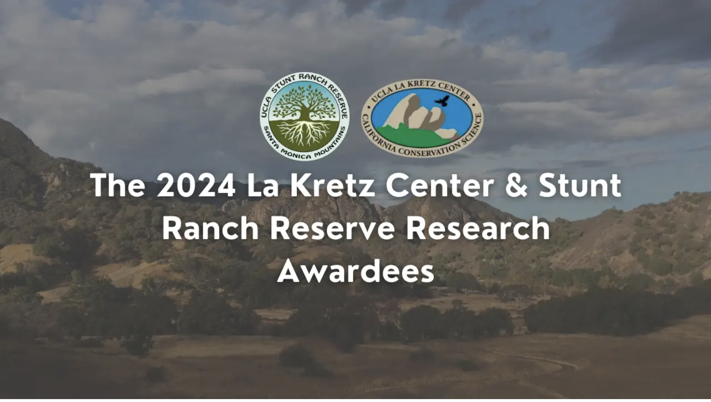

Features
Media features and spotlights.

Welcome the Global Sustainability Scholars 2024
Global Sustainability Scholars on Instagram
2023 UCLA NSF GRFP winners
UCLA Graduate Division
Recipients of the 2024 La Kretz Center and Stunt Ranch Reserve Research Awards
UCLA Institute of the Environment and Sustainability
Scuba diving after her dreams
CIRES News